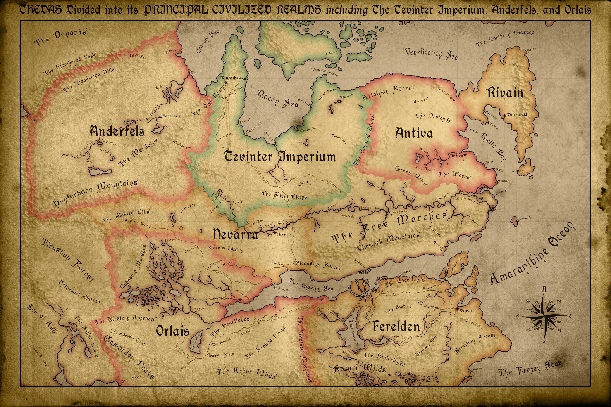
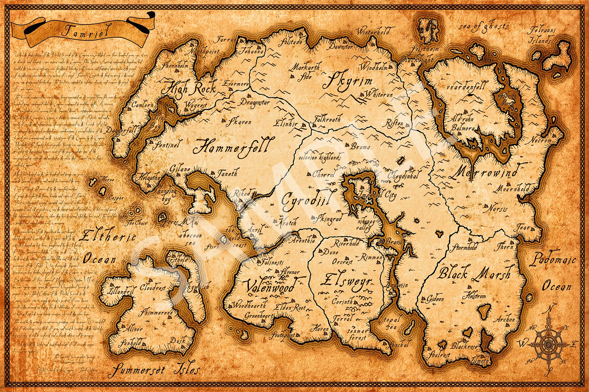
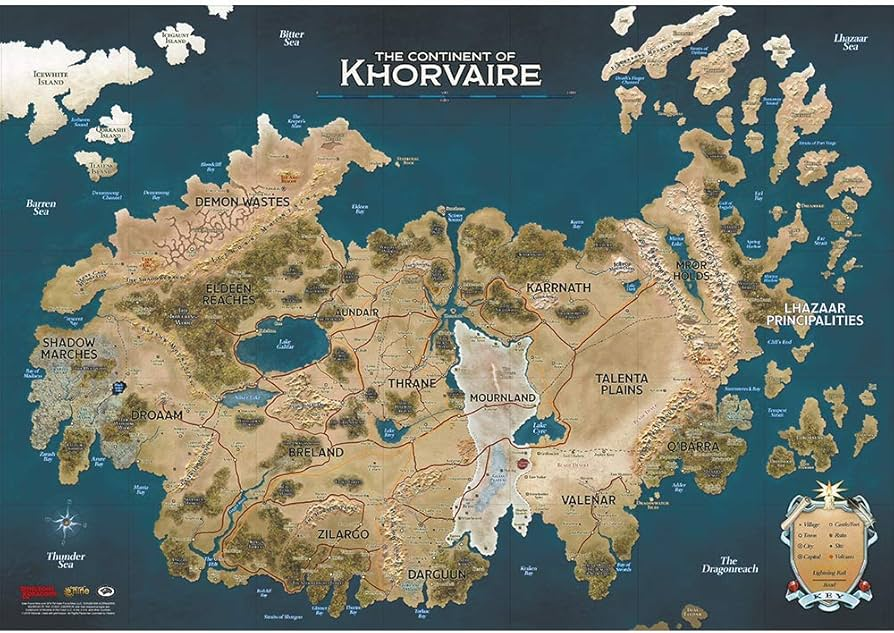
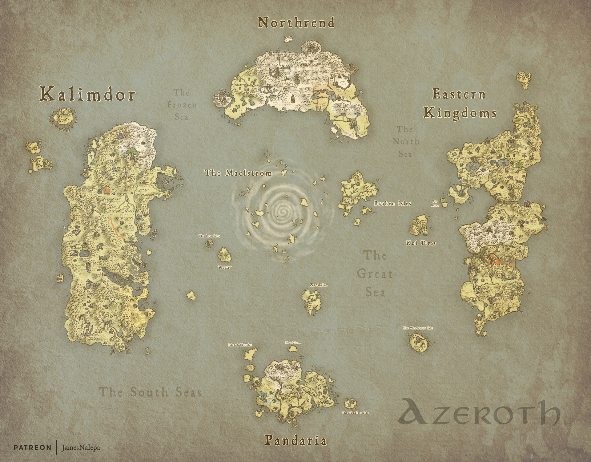

Lore & Mundos
Thedas
Mundo continental dividido por diversas nações em conflito, lar dos Grey Wardens e ameaçado pelas Blights.
Linha do Tempo
- -3100 Ascensão do Império Tevinter
- 1:00 Primeira Blight
- 9:30 Invasão Qunari

Mapa político de Thedas
Tamriel (The Elder Scrolls)
Continente repleto de províncias únicas, desde as florestas de Valenwood até os desertos de Elsweyr, habitado por raças como os Nords e os Dunmer.
Principais Conflitos
- 2E 582 Guerra dos Três Bandeiras
- 4E 201 Retorno de Alduin
- 4E 201 Guerra Civil de Skyrim
Características Únicas
- Dragões e a profecia do Sangue de Dragão
- Presença dos Daedra e seus planos oblíquos

Mapa político de Tamriel
Eberron (Dungeons & Dragons)
Mundo pós-guerra onde magia e tecnologia se fundem, com nações divididas e mistérios ancestrais.
Eventos Marcantes
- 998 YK Fim da Última Guerra
- 996 YK Ascensão dos Lordes do Pó
Elementos Distintivos
- Magitek (comboios elementais, iluminuras)
- Casas Dragomarca e seus poderes hereditários

Mapa de Khorvaire, continente central
Azeroth (World of Warcraft)
Mundo em constante guerra entre a Aliança e a Horda, ameaçado por entidades cósmicas como os Deuses Antigos.
Eras Críticas
- Ano 0 Criação do Well of Eternity
- Ano 25 Terceira Guerra
- Ano 40 Invasão da Legião Ardente
Regiões Icônicas
- Kalimdor (território dos Tauren e Night Elves)
- Eastern Kingdoms (Stormwind e Undercity)

Mapa de Azeroth após o Cataclismo